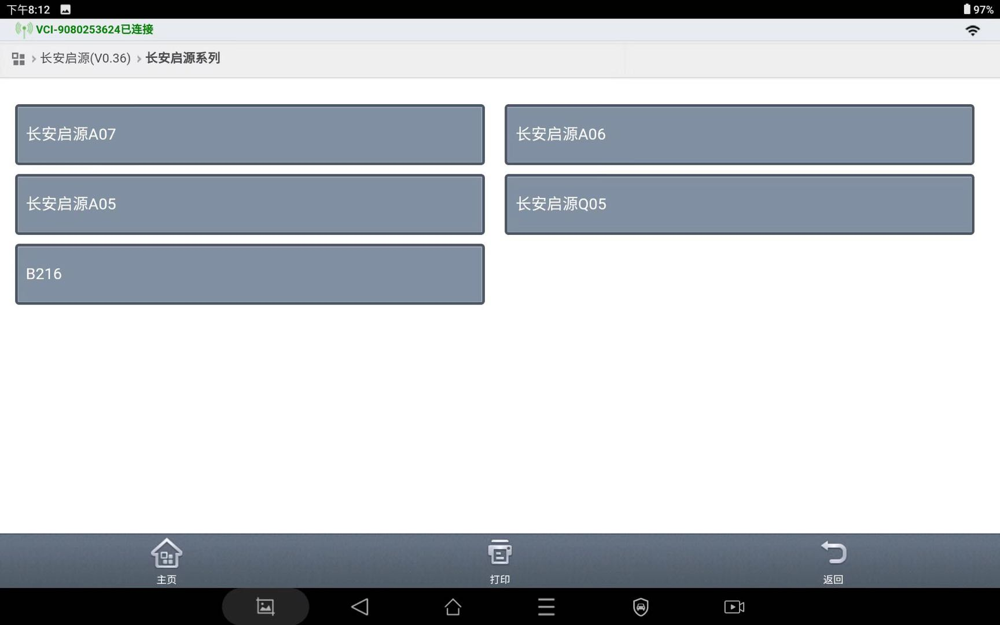
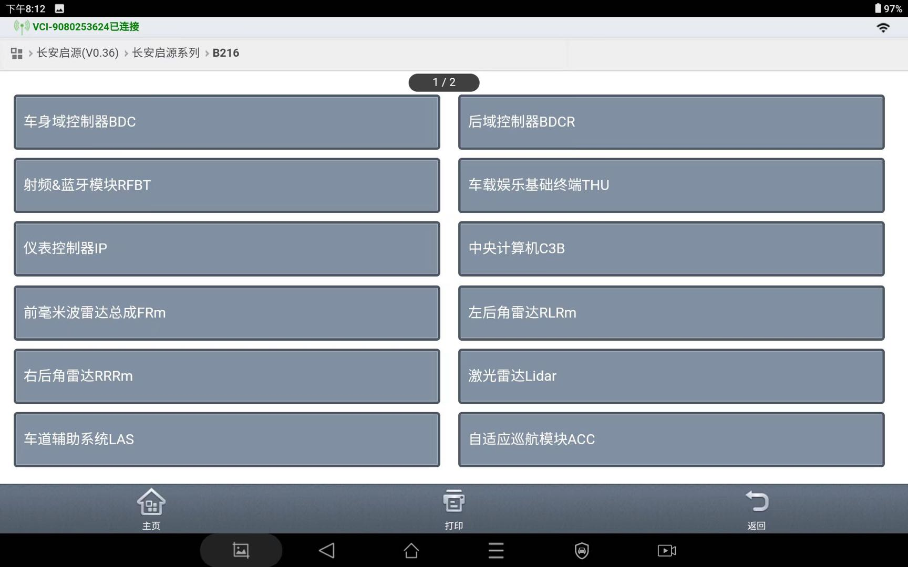
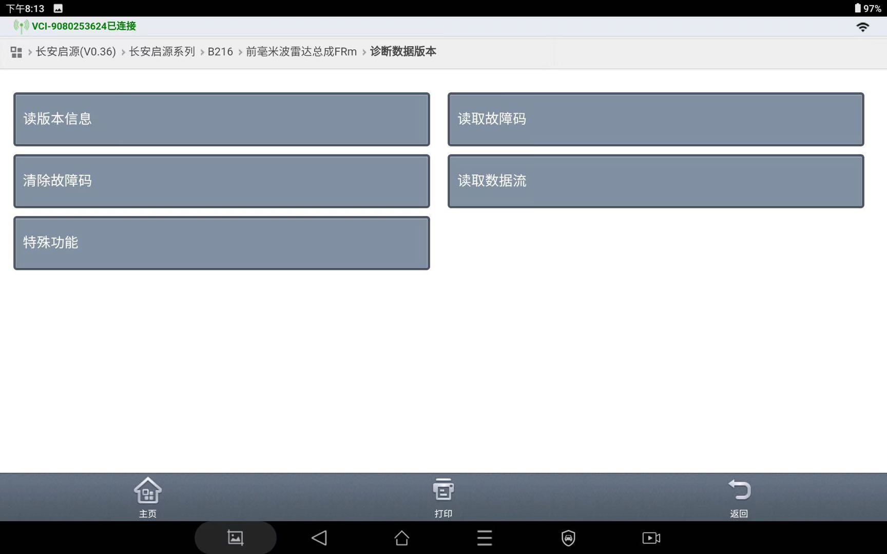
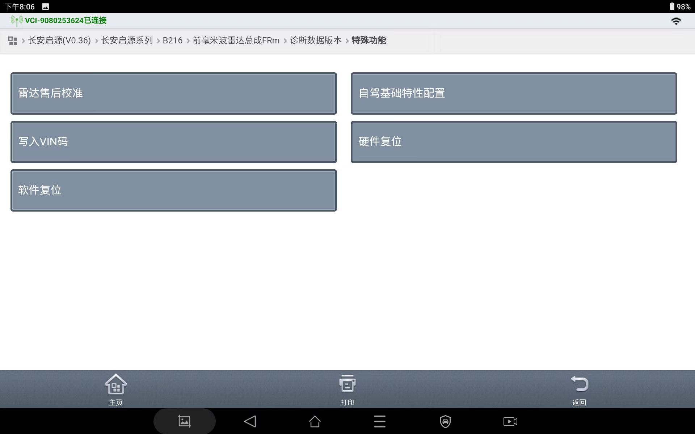
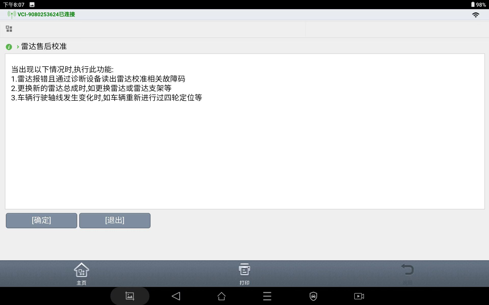
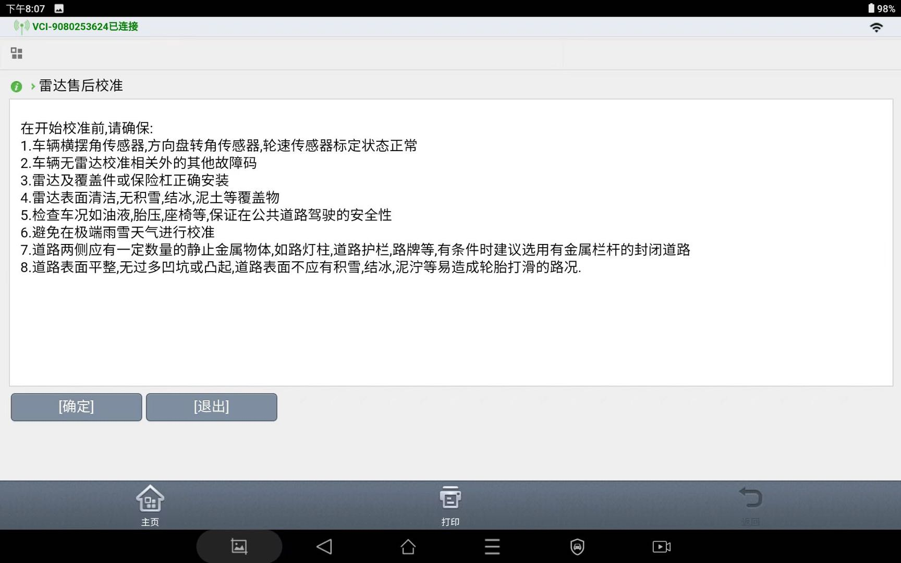
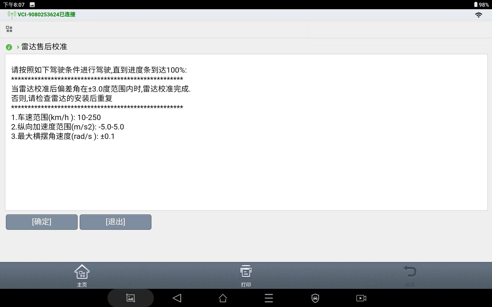
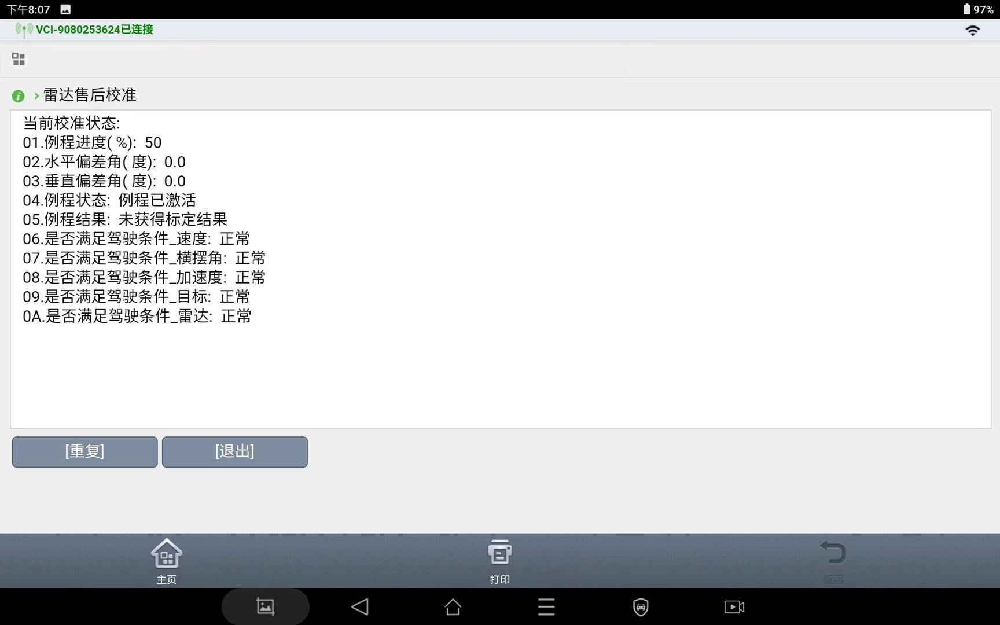

Калибровку радар миллиметрового диапазона переднего обзора в сборе необходимо выполнять с помощью диагностического прибора.
Подключить жгут проводов диагностического прибора к автомобилю:
Открыть программное обеспечение диагностического прибора и выбрать параметры в соответствии с моделью и комплектацией автомобиля.

Нажать для входа в радар миллиметрового диапазона переднего обзора в сборе FRm

Нажать для входа в специальные функции

Нажать для входа в послепродажную калибровку радара

Появится интерфейс послепродажной калибровки, нажать Подтвердить



Выполняется послепродажная калибровка

Калибровка завершена. Достаточно того, чтобы прогресс выполнения процедуры составлял 100%, а статус был нормальным.
Условия и Меры предосторожности для послепродажной калибровки
(1) Плавное движение с постоянной скоростью, диапазон скорости: от 30 km/h до 50 km/h (плавное управление скоростью);
(2) Движение по прямой полосе, диапазон угловой скорости рыскания от -0.6°/s до 0.6°/s (плавное управление поворотом);
(3) Расстояние от краев дороги до автомобиля с обеих сторон должно соответствовать условию: 6 m <= D <= 15 m;
4) По краям дороги по возможности должны находиться неподвижные металлические объекты, такие как металлические ограждения, частые столбы уличного освещения и т. д.; при наличии условий рекомендуется выбирать закрытые прямые дороги с металлическими ограждениями;
(5) Избегать неблагоприятных погодных условий и ситуаций, таких как дождь и снег, скользкие дороги, участки с подъемами и спусками, неровные дороги и т. д.;
Обработка кодов неисправностей
Войти в интерфейс чтения кодов неисправностей, нажать Запрос и убедиться в отсутствии текущих и сохраненных кодов неисправностей;
Войти в интерфейс удаления кодов неисправностей, во всплывающем окне с запросом «Удалить все коды неисправностей FR?» нажать Удалить
Убедившись в отсутствии текущих и сохраненных кодов неисправностей, завершить послепродажную калибровку